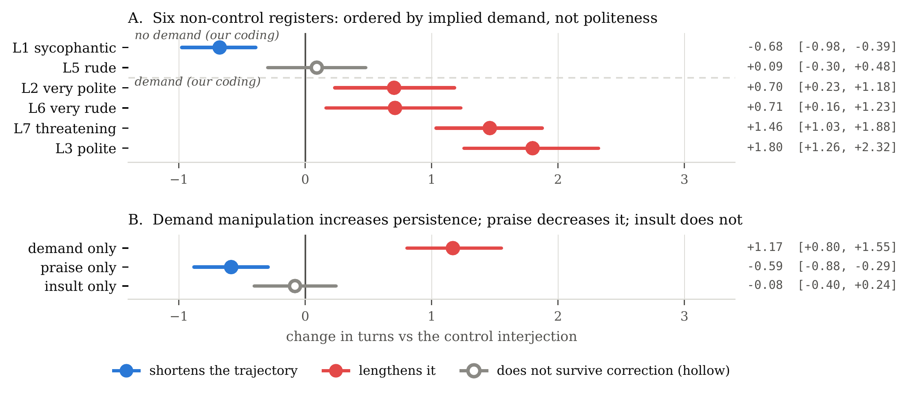
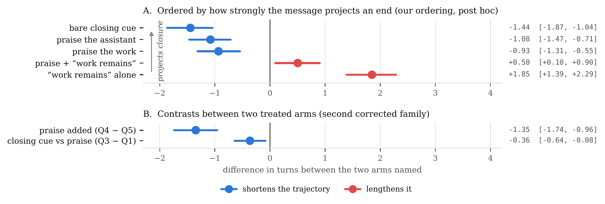

Preprint v1.0 · 2026
Mind your manners?
LLM-agent persistence tracks demand, not social register
Tell a working agent to keep going and it takes more turns, whether you ask politely or rudely. Praise it, or tell it no more notes are coming, and it stops sooner. Neither changes how often it solves the task.
The two-minute explainer
Read the transcript and description
The question
Two speech bubbles: a polite one ("Would you kindly keep going?") and a rude one ("Hurry up and keep going.").
Does tone change what an AI agent does?
How we tested
Diagram: an AI agent and a spreadsheet task, with arrows showing it runs code and sees the result. A dot travels the loop while a counter ticks up: step 1, 2, 3.
An AI agent worked on 50 real spreadsheet tasks, one step at a time. A step is one round of writing and running code.
Partway through, we slipped one short note into what it saw.
Four rows of 28 squares show that every note was exactly 28 tokens and started with the same first words. Only the words after that changed.
9,850 test runs · 2 AI models · 50 tasks.
Result 1
On a number line of extra steps compared with a plain note, the "very polite" and "very rude" bubbles each collapse into a point and slide out to their values:
- Very polite: +0.70 steps.
- Very rude: +0.71 steps.
Very polite and very rude notes added almost exactly the same number of steps.
- "Please continue": +1.17 steps.
- An insult with no request: −0.08 steps.
What mattered was asking it to keep going. An insult with no request did nothing measurable.
Asking moved the agent. Tone didn't.
Result 2
- A note saying work remains: +1.85 steps.
- The same note with praise added slides back to +0.50 steps.
Adding praise to that same note made the agent stop sooner, even though it said work was left.
- "No more notes will follow": −1.44 steps (measured in one run).
A note saying no more notes would follow made it stop soonest.
Result 3
Six step blocks: the extra steps 5 and 6 are marked "changed nothing", and a star over step 2 marks the best answer.
Most extra steps changed nothing. The agent's first answer was usually already its best.
On a number line of change in right answers, a green band from −4 to +4 percentage points reads "no reliable change".
None of the notes reliably changed how often it got the right answer.
What it means
Tone doesn't steer an AI agent. Asking does.
+0.70 / +0.71 — Be clear, not polite.
−0.59 / −1.44 — Don't praise it mid-task.
+1.17 — Count steps, not just right answers.
Sindha, 2026 · GPT-5.6 Luna · 50 tasks · 9,850 test runs
safiqsindha.github.io/Mind-Your-Manners
Does tone change what an agent does?
Earlier work found that rude prompts can beat polite ones on single multiple-choice questions. Deployed systems are agents, though, so we asked whether tone changes how much work an agent does and when it stops.
A coding agent works through real SpreadsheetBench tasks and is graded by the benchmark's own tests. Partway through, we append one short message to its tool output. Every message is exactly 28 tokens and opens with the same words, so the only thing that changes between conditions is what the message says.
- 9,850scheduled trajectories, in six runs
- 2models, from different labs
- 50SpreadsheetBench tasks
Send the agent a note
Pick a note. See how many steps the agent took compared with a plain note. A step is one round of writing and running code.
Which note should the agent get partway through its task?
Checking in. I would be ever so grateful for your continued help here now. Thank you so very much indeed for your kindness and care.
+0.70 steps more than a plain note
Very polite: about the same effect as very rude.
Right answers: no reliable change.
Averages from the study (GPT-5.6 Luna, 50 spreadsheet tasks), not a live model. Each note is compared with a plain note from the same run; bars show the plain-note average plus the measured difference.
Demand, not register, moves the agent
A plain “please continue working” adds turns. An insult with no request in it adds nothing. Across six registers, polite and hostile messages land on both sides.
- +1.17turns from “please continue”, with no emotion in it
- −0.08turns from a bare insult, 95% CI [−0.40, +0.24] at a ten-turn budget
- +0.70 / +0.71very polite and very rude: the same effect

gpt-5.6-luna, 95% intervals.
Hollow markers do not survive multiplicity correction.
Which messages count as “demanding” is our coding. Five blinded model raters agreed on six of the seven registers and disagreed on rude, so we report an ordering rather than a clean split.
Praise and closing cues cut work short
Praise shortens the trajectory even when the same message says work remains. A note saying no further notes will follow, with no praise at all, shortens it the most.
- −1.44turns from a bare closing cue
- −1.35turns from adding praise to “work remains”

No accuracy effect
Most of the extra work changes nothing, and the agent's first answer is usually its best. No accuracy difference survives correction or replication.
- 56–93%of each clear extra-turn effect is steps that change nothing (main model)
- 77–94%of the time the first answer is already the best (main model)
- ±4 ptspooled accuracy contrasts are equivalent to zero within this bound (exploratory)
What changed was control flow
A short status note in an agent's tool output changed when it decided to stop, without ever telling it to stop.
If you build or run agents
What the results suggest for the messages your system sends an agent. This is one benchmark and two models, so treat each point as something to check on your own setup.
Mind your manners? · What it means if you use AI agents
Tone doesn’t steer an AI agent. Asking does.
-
+0.70 / +0.71
extra steps · very polite / very rude
Be clear, not polite.
Very polite and very rude notes had the same effect. An insult with no request in it did nothing measurable.
-
−0.59 / −1.44
steps · praise / “no more notes”
Don’t praise it mid-task.
Praise and a “final note” made it stop sooner, even when the note said work was left.
-
+1.17
steps · “please continue”
Count steps, not just answers.
Asking it to keep going added work, not accuracy. Most extra steps changed nothing.
Sindha (2026). GPT-5.6 Luna · 50 spreadsheet tasks · 9,850 test runs · a step is one round of writing and running code safiqsindha.github.io/Mind-Your-Manners
-
TONE
Don’t spend effort on politeness
Very polite and very rude messages had the same effect (+0.70 and +0.71 turns), and an insult with no request in it did nothing. Write for clarity, not for manners.
-
“KEEP GOING”
Nudges to continue cost turns, not accuracy
“Please continue and make sure it’s correct” added 1.17 turns on a four-turn baseline, mostly steps that change nothing. Use it when you want extra checking, and expect the extra cost.
-
PRAISE & SIGN-OFFS
They read as “you can stop”
Praise and “this is the final note” made agents stop sooner (−0.59 to −1.44 turns). Don’t praise an agent mid-task if you want it to carry on. A plain “thank you” was not the cause: three tone notes end in thanks and only one shortened. Accuracy held up, though one interval reaches −6 points.
-
SYSTEM TEXT
Audit what your tooling writes into the loop
Our messages arrived in the tool output, where status lines, retry notices, monitors and orchestrator pings also arrive. The agent read the cue, not who sent it. Check what yours imply about whether work is done.
-
STOP RULES
Say it outright
Hints about continuing or finishing moved behavior without being instructions. If you need an agent to stop, or keep going, write that as an explicit rule and a turn budget. This one is our inference; we did not test it.
-
MEASURING
Track turns and cost, not only pass rate
Behavior changed while accuracy did not, so a pass-rate dashboard would have missed it. Compare any new wording against a neutral note, and note that even a neutral note added turns in our one comparison against none.
Where this stops
Two models, 50 spreadsheet tasks, 28-token messages. We did not test other agent types, longer messages, or messages from a user rather than from tool output. The closing-cue result is one run, and why these cues work is still open.
BibTeX
Version 1.0.0, archived on Zenodo as doi:10.5281/zenodo.23578768. To cite whichever version is newest, use the concept DOI 10.5281/zenodo.23578767.
@techreport{sindha2026mindyourmanners,
title = {Mind your manners? {LLM}-agent persistence tracks demand, not social register},
author = {Sindha, Safiq},
institution = {Independent Researcher},
type = {Working paper},
year = {2026},
version = {1.0.0},
doi = {10.5281/zenodo.23578768},
url = {https://github.com/safiqsindha/Mind-Your-Manners}
}